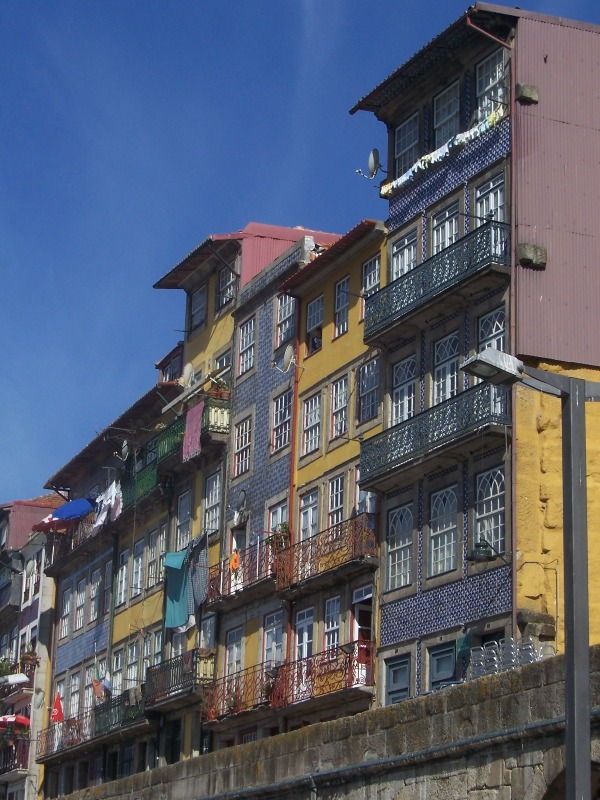
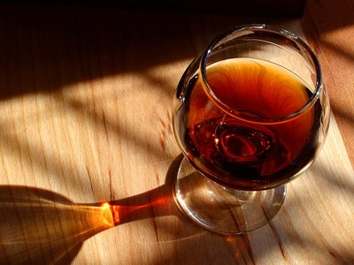
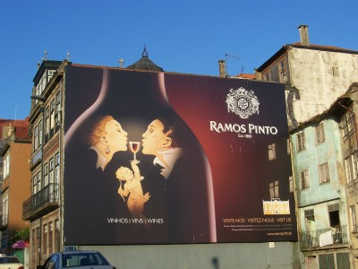
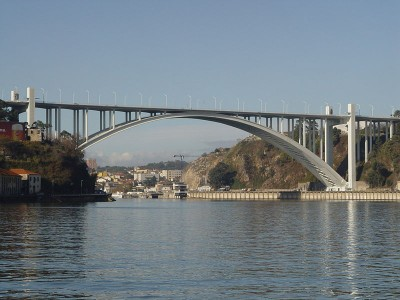
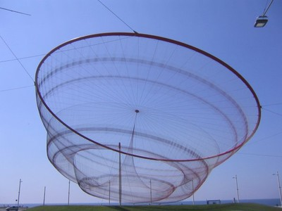

Porto
Porto, also Oporto in English, is Portugal's second city. The city is located in the estuary of the Douro river in northern Portugal. The largest city in the region, Porto is considered the economic and cultural heart of the entire region. The city, which had an estimated population of 238,465 in 2005, lies at the center of the political Greater Metropolitan Area of Porto, with a population of 1.57 million (2006), and of a broader metropolitan agglomeration with over 2.9 million inhabitants in the 2001 census.
Porto was elected Best European Destination 2012 by european citizens, as reported on the website europeanconsumerschoice.org. Find out MUCH more about things to see, do, shop, eat... here.
Ribeira, the historic Centre of Porto, has been declared a World Heritage Site by UNESCO (1996).

One of Portugal's most internationally famous products, Port wine, was named after the city because it was originally shipped from the area, or more precisely, from Vila Nova de Gaia, a city just across the river which belongs to the same conurbation. The country (Portugal) was also named after the Latin name of this city, Portus Cale (the "sheltered port").


Porto’s status as European City of Culture in 2001 was the signal for a massive urban redevelopment, and Porto has been turned upside-down in a flurry of construction work, including the provision of a new metro system and tram lines. In the scope of these events, the construction of the major concert hall space Casa da Música, designed by the Dutch architect Rem Koolhaas, was initiated and finished in 2005.
Among the architectural highlights of the city, the Porto Cathedral is the oldest surviving structure, together with the small Romanesque Church of Cedofeita, the Gothic Igreja de São Francisco (Church of Saint Francis), the remnants of the city walls and a few 15th-century houses. Baroque style is also well represented in the city. Neoclassicism and Romanticism of the 19th and 20th centuries also added interesting monuments to the landscape of the city, as the São Bento Train Station and the gardens of the Crystal Palace (Palácio de Cristal).
Porto has several museums, concert halls, theaters, cinemas, art galleries, libraries and book shops (among which the "Lello" bookshop, that was featured in third place in The Guardian's list of world's top bookshops). The best-known museums of Porto are the National Museum Soares dos Reis (Museu Nacional de Soares dos Reis), which is dedicated especially to the Portuguese artistic movements from the 16th to the 20th century, and the Museum of Contemporary Art of the Serralves Foundation (Museu de Arte Contemporânea).

Porto is home to a number of dishes from traditional Portuguese cuisine. A typical dish from this city is Tripas à Moda do Porto (Tripes Porto style), which still can be found everywhere in the city today. Bacalhau à Gomes de Sá (Gomes de Sá cod fish) is other typical codfish dish born in Porto and popular in Portugal. The Francesinha is the most famous popular native snack food in Porto. It is a kind of sandwich with several meats covered with cheese and a special sauce made with beer and other ingredients.

(This article is licensed under the GNU Free Documentation License. Some text and pictures are from the Wikipedia article "Porto")
Want to know more?
- Find out MUCH more about things to see, do, shop, eat... here.
- Porto tourism official website
- About Portugal, about Porto and the North, about the city of Porto
- Wikipedia: Porto, Portugal


{kind=link}